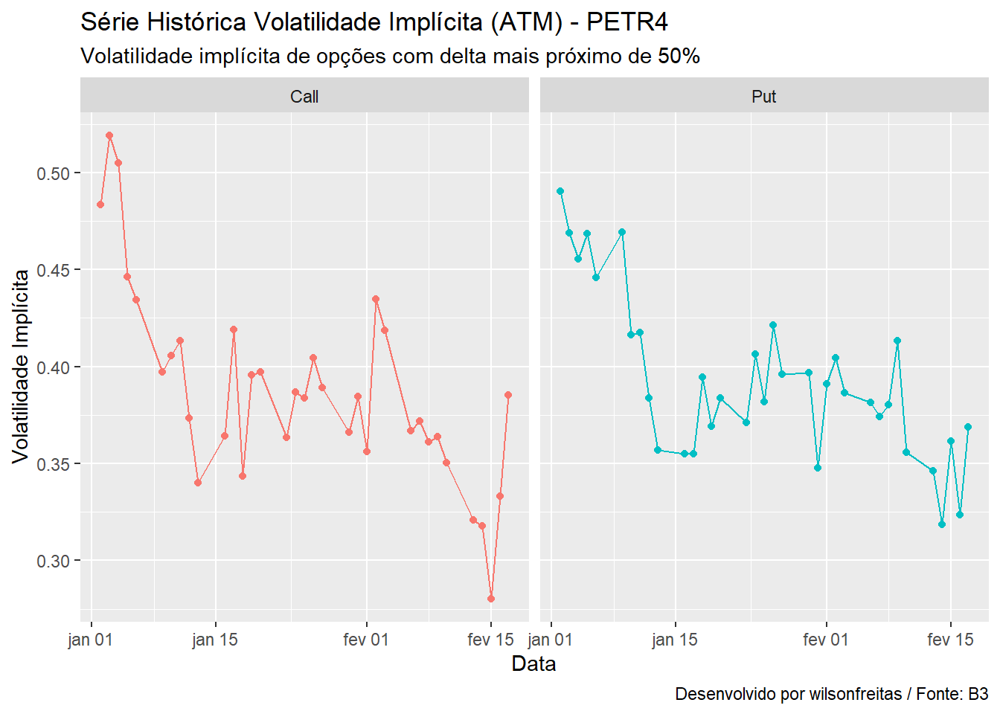
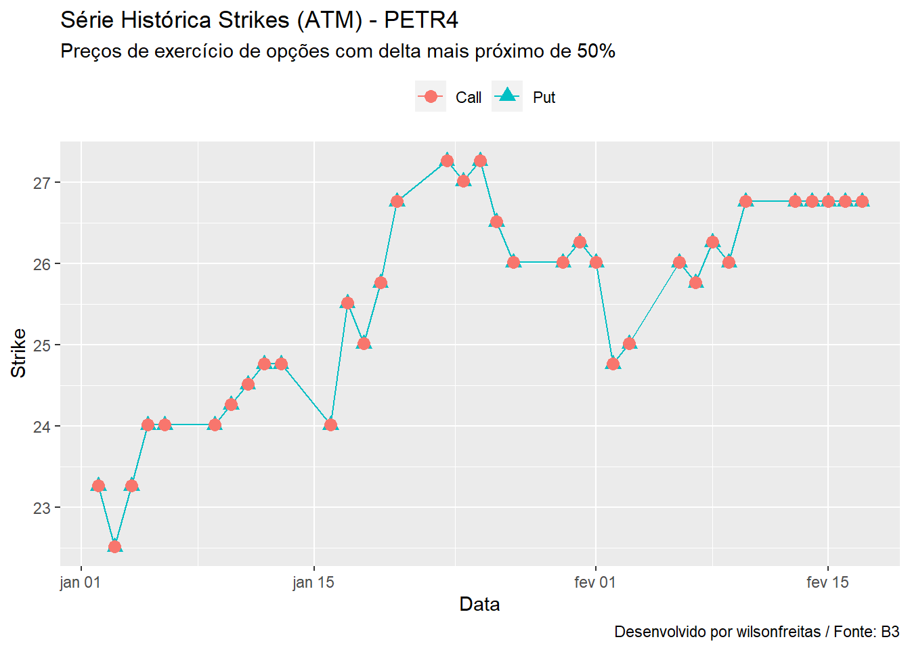
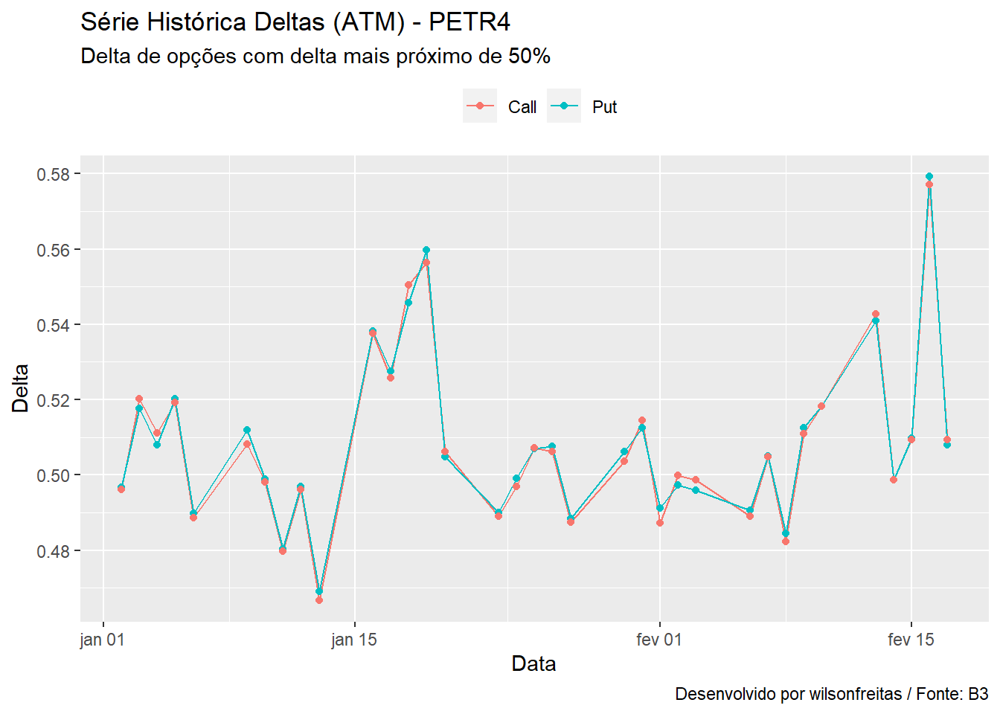

library(rb3)
library(oplib)
library(bizdays)
library(tidyverse)Há divesos estudos sobre o comportamento das opções e sobre quais fatores são mais importantes para explicar as suas mudanças de preços. Sabemos que, depois do ativo objeto, a volatilidade implícita é a variável que mais influiencia nas variações de preços das opções. Dessa forma, é importante entender como se dão as suas variações, de outra forma, é importante conhecer a sua dinâmica.
Aqui vou carregar o histórico de opções de PETR4 desde o começo de 2022, calcular a volatilidade implícita e o delta para cada uma das opções, e para cada data de referência, selecionar as opções, call e put, mais próximas da data de vencimento e com o delta mais próximo de 50%.
Assim teremos uma opção, para cada tipo, call e put, em cada data de referência. Dessa maneira, é possível construir uma série temporal de volatilidade implícita por tipo de opção.
As opções mais próximas do vencimento (ou primeiro vencimento), apresentam a maior liquidez dentre as opções negociadas. Aqui estamos selecionando o primeiro vencimento até a sua expiração, entretanto, é interessante que seja realizada uma análise da liquidez das opções a medida que se aproximam do vencimento para que uma estratégia de rolagem seja definida. Pois, na medida que o primeiro vencimento se aproxima, a liquidez migra para o segundo vencimento. O desafio é identificar a dinâmica dessa migração. Aqui isso não será levado em consideração, vamos carregar as opções do primeiro vencimento até a sua expiração.
Começando com o carregamento de pacotes.
As opções são carregadas via o arquivo COTAHIST (rb3::cotahist_get) e as curvas de juro são baixadas do site da B3 na página de Taxas de Referência (rb3::yc_mget).
refdate <- getdate("last bizday", Sys.Date(), "Brazil/B3")
ch <- cotahist_get(refdate, "yearly")
yc <- yc_mget(first_date = as.Date("2022-01-01"), last_date = refdate)Vamos utilizar a função rb3::cotahist_options_by_symbol_superset para obter o super dataset para opções de PETR4. De posse do super dataset, os dados de vencimento e taxas de juros são formatados para o cálculo da volatilidade implícita e do delta para todas as opções.
symbol <- "PETR4"
op <- cotahist_options_by_symbol_superset(symbol, ch, yc)
op_vol <- op |>
mutate(
biz_days = bizdays(
refdate, following(maturity_date, "Brazil/B3"), "Brazil/B3"
),
time_to_maturity = biz_days / 252,
rate = log(1 + r_252),
bsm_impvol = bsmimpvol(
close, type, close.underlying, strike, time_to_maturity, rate, 0
),
delta = bsmdelta(
type, close.underlying, strike, time_to_maturity, rate, 0, bsm_impvol
)
) |>
select(
refdate, symbol, volume, maturity_date,
type, close.underlying, strike, time_to_maturity, rate,
biz_days, close, high, low, bsm_impvol, delta
)Dinâmica da Volatilidade ATM
Como todos os cálculos realizados vamos selecionar as opções ATM do primeiro vencimento para cada data de referência. Fazemos uma segmentação dos dados por refdate e para cada chunk selecionamos o primeiro vencimento.
op1 <- op_vol |>
split(op_vol$refdate) |>
map_dfr(function(df) {
first_mat <- df$maturity_date[which.min(df$maturity_date)]
filter(df, maturity_date == first_mat)
})O dataframe op1 tem opções call e put, em diversos strikes, para cada data de referência. Agora precisamos selecionar as opções mais próximas do dinheiro, ou seja, as opções com delta mais próximo de 50%. Como há uma diferença de sinal entre opções call e put, vamos calcular as diferenças em valores absolutos do delta em relação ao valor 0.5 (delta = 50%).
op1_atm <- split(op1, op1$refdate) |>
map_dfr(function(df) {
df_type <- filter(df, type == "Put")
df1 <- df_type[which.min(abs(abs(df_type$delta) - 0.5)), ]
df_type <- filter(df, type == "Call")
df2 <- df_type[which.min(abs(abs(df_type$delta) - 0.5)), ]
bind_rows(df1, df2)
})O dataframe op1_atm tem, para cada data de referência, 1 call ATM e 1 put ATM.
Vamos visualizar a série temporal de volatilidades implícitas para estas opções.
op1_atm |>
ggplot(aes(x = refdate, y = bsm_impvol, colour = type)) +
geom_line() +
geom_point() +
facet_wrap(type ~ .) +
labs(
x = "Data", y = "Volatilidade Implícita",
title = "Série Histórica Volatilidade Implícita (ATM) - PETR4",
subtitle = "Volatilidade implícita de opções com delta mais próximo de 50%",
caption = "Desenvolvido por wilsonfreitas / Fonte: B3"
) +
theme(legend.position = "none")
É possível notar que a dinâmica da volatilidade, entre as opções call e put, é bem comportada. Há eventuais momentos de divergência, contudo, o comportamento das duas séries é bastante semelhante. As séries apresentam um forte comportamento de reversão à média, o que é característico desse tipo de variável.
Outro ponto interessante é verificar quais os preços de exercício para as opções ATM selecionadas. Pois, uma vez que o preço do ativo objeto muda, o delta da opção muda e o preço de exercício que representa o delta também muda.
op1_atm |>
ggplot(aes(x = refdate, y = strike, colour = type)) +
geom_line() +
geom_point(aes(shape = type), size = 3) +
labs(
x = "Data", y = "Strike",
title = "Série Histórica Strikes (ATM) - PETR4",
subtitle = "Preços de exercício de opções com delta mais próximo de 50%",
caption = "Desenvolvido por wilsonfreitas / Fonte: B3"
) +
theme(legend.position = "top", legend.title = element_blank())
Aqui as séries são praticamente as mesmas, indicando que as opções ATM, calls e puts, possuem os mesmos strikes. Em poucos pontos há uma diferença nos preços de exercício. É interessante que este ponto seja melhor avaliado e talvez a liquidez das opções ajude a explicar estas diferenças.
Vamos observar os deltas das opções ATM selecionadas. Uma vez que estamos selecionando opções ATM, é interessante que os deltas estejam próximos de 50%. Mas como se dá essa seleção? No gráfico abaixo vemos que os deltas de calls e puts oscilam em torno de 50% e estão sempre próximos entre si, há poquíssimos casos em que o delta da call está acima de 50% e o delta da put está abaixo de 50%. Novamente, cabe uma melhor investigação para melhor compreender os fatores causadores da divergência.
op1_atm |>
mutate(delta = ifelse(delta < 0, 1 + delta, delta)) |>
ggplot(aes(x = refdate, y = delta, colour = type)) +
geom_line() +
geom_point() +
labs(
x = "Data", y = "Delta",
title = "Série Histórica Deltas (ATM) - PETR4",
subtitle = "Delta de opções com delta mais próximo de 50%",
caption = "Desenvolvido por wilsonfreitas / Fonte: B3"
) +
theme(legend.position = "top", legend.title = element_blank())
Uma vez que construímos as séries temporais para a volatilidade de opções ATM, o próximo passo é modelar essa série. Um problema interessante é comparar essa dinâmica com a volatilidade realizada, talvez separando por cada vencimento. Idealmente a volatilidade implícita deveria convergir para a volatilidade realizada. Outro ponto que ficou em aberto e a avaliação da liquidez e sua consequência na estratégia de rolagem. Aqui estamos selecionando as opções mais próximas do ATM para obter as volatilidades. Uma alternativa é fazer o ajuste de um modelo e obter a volatilidade teórica par um delta de 50%. Em geral, como a liquidez se concentra próximo à vizinhança das opções no dinheiro, há bastante informação nessa região para obter um bom modelo ajustado.